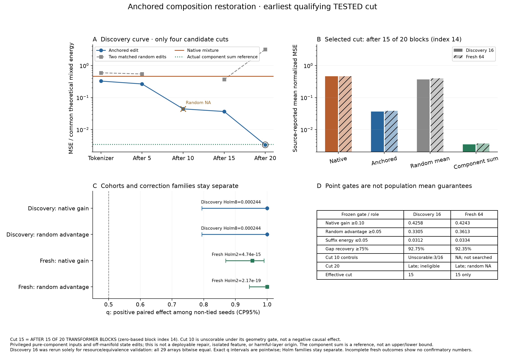
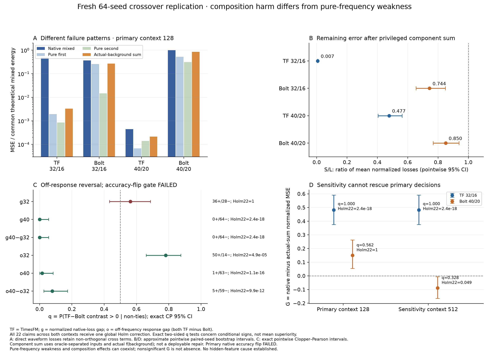

The component forecasts are accurate, but TimesFM struggles when those components are mixed. On 64 new mixtures, amplitude- and background-aware state composition after 15 of 20 transformer blocks reduced the mean forecast loss and beat geometry-matched random edits. Those available component representations can support a much better continuation under this controlled intervention.
Fresh selected-cut replication passed. Native normalized MSE 0.463168 → anchored 0.0388412; matched-random mean 0.400122. Improvement occurs in 61/64 seeds; 3 seeds become worse. The actual component-sum reference is 0.00371419. This uses known separated components and an off-manifold state edit, not a deployable forecasting fix.
Loss chart, discovery history and all controls · Portable restoration source data · Independent model-free audit · Bound producer results and protocols

Native-minus-anchored gain is 0.424326 (61/64 favorable signs; global Holm2 p=4.74284e-15). Mean-random-minus-anchored advantage is 0.361281 (64/64; Holm2 p=2.1684e-19). Both registered empirical size gates and the conditional-majority tests pass. Exact sign tests do not establish population mean-superiority.
The unclipped recovery ratio is 0.923546 of the native-to-component-reference gap, not the fraction of native error removed and not a bounded ceiling score. Suffix-remainder energy is 0.0334065. The component sum is a reference, not a performance bound.
This supports compatibility of a background-anchored state composition with the remaining suffix. It does not identify the origin of harmful computation, a unique or isolated feature, or a generally usable repair. Cut 15 was selected from a coarse registered discovery grid; it is not claimed to be the earliest possible site. Geometry controls use two fixed random draws per seed, averaged within seed, not 128 independent samples.
The original 16-seed discovery failed its memory cap and remains failed. A resource-only rerun reproduced all 29 saved matrices bitwise and the entire scientific dictionary exactly, then passed; that is execution correction, not replication. The separate fresh 64-seed run used four serial workers, released every model before pooled statistics, passed the 1.5 GiB cap, and finished in 41.62 seconds.
The independent audit verifies all 64 saved outcomes, identities, hashes, exact binomial/Holm2 values and gate/resource overrides. Its geometry check verifies frozen diagnostics and random-draw hashes; hidden states were not persisted, so it does not regenerate those rotations from hidden states. Bit-exact p-value verification · Three negative cases, descriptive only.
TimesFM 32/16 shows strong error reduction when known components are forecast separately. Bolt 40/20 already struggles with pure frequencies, and most mixed error remains after component summation. The native off-response reversal replicated; the primary native accuracy ranking flip FAILED.
Earlier study and diagnostic tools · Portable scientific source data · Figure PDF · All saved results · Frozen producer protocol · Native source and resource provenance
Context 128 is primary. Its 32/16 TF−Bolt mean gap is positive, but q=0.5625 and Holm22 p=1: no confirmed ranking flip. Context 512 passes the separate sensitivity flip and cannot rescue the primary result. A mean interval excluding zero is not a significant exact sign result.

Stronger input-only RBF control: prediction loss 0.00793532 versus 0.0092270738 after adding derivative features; primary gain -0.0012917538. The robustness gate fails. This closes the tested incremental prediction claim, not every possible feature predictor.
Residual-update clamp: no site advances. Final block 19 has 13/16 favorable signs, Holm8 p=0.170166015625; native controls pass but the full intervention gate fails. This is not forecast repair.
No eligible comparison passed the complete feature-expansion gate. Bolt 40/20 has stable low-order patterns but fails held-out waveform coverage; TimesFM and Bolt 32/16 fail the required stability check. Both pilot-negative comparisons remain closed. No finer grid, higher order, or hidden capture is supported by this branch.
| Model | 32/16 | 40/20 |
|---|---|---|
| TimesFM | Unresolved / aliased | Stable and adequate |
| Bolt | Unresolved / aliased | Stable low-order; partial coverage |
| Chronos-2 | Stable and adequate | Stable and adequate |
Full partial-response report, mode tables and bound figure/data. Only stable 40/20 mode identities are described there. Native preprocessing varies with phase on finite windows; these patterns do not assign a normalization or internal-feature cause. Original pilot control failures remain recorded; separate FP64 replay and fixed-B8 diagnostics do not retroactively relabel them. Completed follow-up producer results and their bound protocols remain available.
This separate 32/16 task uses context 128 and horizon 32, rather than the horizon-64 crossover above. Readout fitting uses 96 old training bundles and 48 validation bundles; the table evaluates 128 previously inspected generating bundles. Task-specific supervised recovery from the forecast output is substantially worse than the frozen head-input readout. Both models fail the descriptive point gate: output reconstruction MSE ≤0.01 and output-minus-head excess ≤0.01. These are exploratory cached-cohort diagnostics, not new held-out confirmation or an information-destruction proof.
| Model | Native MSE | Output readout | Frozen head readout | Output−head excess | Point gate |
|---|---|---|---|---|---|
| Bolt | 0.2044276 | 0.02237086 | 0.0005480985 | 0.02182276 | Failed |
| TimesFM | 0.3512594 | 0.07411272 | 0.0006623375 | 0.07345038 | Failed |
Losses use common theoretical mixture energy. Extra semantic labels, a known harmonic basis, and external context mean/scale privilege both readouts; the input oracle is near zero. This is not a deployable forecast repair. Exact intervals, old/fresh cohort results, and the legacy cache row-order limitation remain in the portable source data.
On the TimesFM 32/16 task, context 128 and horizon 64, identical normalized 32-step patches route identical attention value vectors; the collapsed tokenwise path reproduces the inspected native forecasts. This explains the homogeneous context-invariance boundary, not composition error or general irrelevance of attention routing. The 16-bundle replay maximum normalized waveform RMS is 5.370742e-06.
The exact radial decomposition has signed projection shares 0.6314958 for the fixed-normalizer term and 0.3685054 for the radial remainder. These are signed vector projections, not additive energy fractions or causal blame; cross terms and replay residual remain recorded. Fixed-mixture-normalizer component inputs are off the native unit-RMS manifold. No fitting, population replication, or repair claim follows.
A separate exploratory screen reused the 16 discovery seeds, at fixed cut 15, with an uncentered SVD channel basis. Opposite generating-seed parity folds fit on 8 bundles and apply to the other 8; no truth or forecast loss enters the basis fit. All prespecified ranks 1, 2, and 4 fail the frozen screen.
| Rank | Mean normalized MSE | Full-edit gain recovered | Random-loss advantage | Mean-only advantage | Screen |
|---|---|---|---|---|---|
| 1 | 0.2950803 | 39.3% | 0.1123409 | -0.01173326 | Failed |
| 2 | 0.1952378 | 62.8% | 0.1775108 | 0.08810926 | Failed |
| 4 | 0.1385366 | 76.1% | 0.2350918 | 0.1448105 | Failed |
Full-state edit loss on these 16 seeds is 0.03675789; the mean-only control is 0.283347. Rank 4 recovers only 76.1% of the full-edit improvement, below the required 80%, and loss remains above 0.06. This recovery denominator differs from the native-to-component-reference gap used in the fresh full-state replication.
No higher-rank search or fresh compactness inference follows. This closes the tiny prespecified uncentered-SVD screen; it does not disprove all low-dimensional or nonlinear mechanisms. The mean-only edit is a training-fold channel mean broadcast across positions, not every possible position template. Random controls preserve edit geometry but are not matched-rank or capacity-equivalent controls. There are no p-values or confirmatory claims on these reused seeds. Bound compactness results and protocol · Independent audit recomputes the held-out projectors, all 96 keyed random edits and their geometry from saved states.
g is the TF−Bolt native mixed-loss gap; C is the difference in native-minus-actual-sum gains; o is the full-Gram off-target derivative energy gap. Common theoretical mixed energy normalizes every pure/mixed/background loss. Two-sided detection alone is not a predicted-direction or mean-superiority claim. Legacy mixed-minus-average-pure interaction remains descriptive: an additive biased forecaster can have nonzero interaction at zero actual-sum gain.
| Contrast | Signed empirical mean | q positive/non-tie | Global Holm22 p | Size/sign gate | Scope |
|---|---|---|---|---|---|
| c128/g32 | 0.118744 | 0.5625 | 1 | False | primary |
| c128/g40 | -1.00604 | 0 | 2.38524e-18 | True | primary |
| c128/g40_minus_g32 | -1.12478 | 0 | 2.38524e-18 | True | primary |
| c128/C32 | 0.388039 | 0.859375 | 3.188e-08 | True | primary |
| c128/C40 | -0.150458 | 0.4375 | 1 | False | primary |
| c128/C40_minus_C32 | -0.538497 | 0.1875 | 3.65329e-06 | True | primary |
| c128/o32 | 0.434124 | 0.78125 | 4.94864e-05 | True | primary |
| c128/o40 | -0.181329 | 0.015625 | 1.0571e-16 | True | primary |
| c128/o40_minus_o32 | -0.615453 | 0.078125 | 9.9031e-12 | True | primary |
| c128/G_timesfm32 | 0.481933 | 1 | 2.38524e-18 | True | primary |
| c128/G_bolt40 | 0.150692 | 0.5625 | 1 | False | primary |
| c512/g32 | 0.423755 | 0.90625 | 9.02902e-11 | True | sensitivity; cannot rescue 128 |
| c512/g40 | -0.605031 | 0 | 2.38524e-18 | True | sensitivity; cannot rescue 128 |
| c512/g40_minus_g32 | -1.02879 | 0 | 2.38524e-18 | True | sensitivity; cannot rescue 128 |
| c512/C32 | 0.469957 | 0.984375 | 1.0571e-16 | True | sensitivity; cannot rescue 128 |
| c512/C40 | 0.0879153 | 0.671875 | 0.0488814 | True | sensitivity; cannot rescue 128 |
| c512/C40_minus_C32 | -0.382042 | 0.34375 | 0.0674328 | False | sensitivity; cannot rescue 128 |
| c512/o32 | 0.49009 | 0.953125 | 5.69141e-14 | True | sensitivity; cannot rescue 128 |
| c512/o40 | -0.322578 | 0 | 2.38524e-18 | True | sensitivity; cannot rescue 128 |
| c512/o40_minus_o32 | -0.812669 | 0.015625 | 1.0571e-16 | True | sensitivity; cannot rescue 128 |
| c512/G_timesfm32 | 0.481933 | 1 | 2.38524e-18 | True | sensitivity; cannot rescue 128 |
| c512/G_bolt40 | -0.0879177 | 0.328125 | 0.0488814 | True | sensitivity; cannot rescue 128 |
q tests concern conditional majority among non-tied matched seeds. Mean and ratio intervals use approximate paired whole-seed bootstrap; no confidence bound establishes the practical margin. Native normalization remains part of each model function. Significant associations or input interventions do not establish hidden mediation.
{
"replay": {
"passed": true,
"claims_replayed": 22,
"per_seed_values_checked": 6144,
"maximum_per_seed_absolute_error": 5.329070518200751e-15,
"maximum_full_gram_energy_closure": 1.0278701946031862e-15,
"methods": "Independent direct saved-forecast losses; Gram normal equations; scipy exact binomial/CP; sorted monotone Holm; paired bootstrap replay",
"source_sha256": "06cfa68e74178b2396a04bc5e5827d36c2f2372f7c79aabd319b84b16e9fc201",
"prepared_protocol_sha256": "76d672e1521e029c3ec17068a82101f4b8fa03a987dc3a0f0211f9641717e72d",
"results_sha256": "776718bd7a0ef0b0ad6f6f7fae27b53dfec34dcd0cf1ef422643217861a23ff3"
},
"source_files": {
"tsfm_lens/runs/feature_search_stage49_crossover3400000/results.json": "776718bd7a0ef0b0ad6f6f7fae27b53dfec34dcd0cf1ef422643217861a23ff3",
"tsfm_lens/runs/feature_search_stage49_crossover3400000/protocol.json": "76d672e1521e029c3ec17068a82101f4b8fa03a987dc3a0f0211f9641717e72d",
"tsfm_lens/runs/feature_search_stage49_crossover3400000/provenance.json": "5a51e9a87cd3ec2b6edd974eda3e2c167d5e750082a19c242d368a61da52cce9",
"tsfm_lens/runs/feature_search_stage49_crossover3400000_prepared/protocol.json": "76d672e1521e029c3ec17068a82101f4b8fa03a987dc3a0f0211f9641717e72d",
"tsfm_lens/runs/feature_search_20261111_stage49_rbf_challenge/results.json": "096b00f7fbe6c7c409859442484b99cd50aa77cbef38e09cfbe2f93aa1e9a06b",
"tsfm_lens/runs/stage49_timesfm_residual_update3100000_retry1/results.json": "586596967571505e35a8431509076b75f862ce16db9008477bd2c2f79e60b69a",
"tsfm_lens/runs/feature_search_stage49_phase_alias3500000/results.json": "14b4c44948659321792f7f4bfca8347d7f79583f10232c0c8476a674359b0a17",
"tsfm_lens/runs/feature_search_stage49_phase_alias3500000/protocol.json": "9c7eb8871ad3cf3569988c4db4926985f70a9b57b39d91d5f5976d10ec508c64",
"tsfm_lens/runs/feature_search_stage49_forecast_recoverability/results.json": "cc83259e07885681a6563947a662a2672e533ca5a95f673887be27ffc452c01a",
"tsfm_lens/runs/feature_search_stage49_forecast_recoverability/protocol.json": "86790ac0979b62b17b2f1b357a47067346b767415b106cc424b03a9cd12867d9",
"tsfm_lens/runs/feature_search_stage49_homogeneous_pilot/results.json": "da1910d955aca3841fe600fc4cb7e36b18d19f03c9362bf41a0c5b17cb483d53",
"tsfm_lens/runs/feature_search_stage49_homogeneous_pilot/protocol.json": "cf0c20a34bf092e6e074caf3aea48d32b609b034eb02a170054caa71044cb657",
"tsfm_lens/runs/feature_search_stage49_restoration3600000/results.json": "216db91eb3cc0156af999c889f26f7155f9308c3f9c05b6601a9142acbe92280",
"tsfm_lens/runs/feature_search_stage49_restoration3600000/protocol.json": "044fbb9a00a17b039522b7c89f7ddf7829b77791ecc39f0b7bb6bc3ed40329d9",
"tsfm_lens/runs/feature_search_stage49_restoration3600000_memorysafe/results.json": "17976a6424a843397196908121fb292c2ccaa2f222d92256b44dbafafeff4515",
"tsfm_lens/runs/feature_search_stage49_restoration3600000_memorysafe/protocol.json": "d4be08607442fbc25f1d99dd948850a31cf876053369de86cbf6c2a3c9003826",
"tsfm_lens/runs/feature_search_stage49_restoration3700000/results.json": "526adc50dbd4c07cc4100ff5267aa9a694bbce219facdc7248ca71f77c7bf13e",
"tsfm_lens/runs/feature_search_stage49_restoration3700000/protocol.json": "0136c8049cbb108bd246b2abc14188dbbee30ec3304e686bee4c211486530d6c",
"tsfm_lens/runs/feature_search_stage49_restoration3700000/controller_validity.json": "025b8d35ed8b34ae98c7a456ee1b76a360999d8ba797435cf860c85040ec47da",
"tsfm_lens/runs/feature_search_stage49_restoration3700000_independent_audit/audit.json": "3b758b985841d511eeb86c49e6972406d0ffea0b8700ad9fb36cd12b94caa611",
"tsfm_lens/runs/feature_search_stage49_restoration3700000_independent_audit/exact_p_verification.json": "e1f3494d21dc9f8fa32d4c42cab2e74b52bc34fe8e3cf4d9a33fa9d1a615abd8",
"tsfm_lens/runs/feature_search_stage49_compactness3600000/results.json": "7b04a693fc940e89e7a5ff00789ac6bc9ce72b53512815ac205ab05615f8bfa5",
"tsfm_lens/runs/feature_search_stage49_compactness3600000/protocol.json": "a807f4e5c59e8bbc194086f76a7b9aeb20939acbf5e4436c30fcf5bb348559b1",
"tsfm_lens/runs/feature_search_stage49_compactness3600000_independent_audit/audit.json": "b17c0786db1c9792b7fe86a319a126dcdeba6377b6c3b4dfedd1a9c6a0483843"
},
"producer_protocol": {
"config": {
"seed_base": 3400000,
"n_seeds": 64,
"contexts": [
128,
512
],
"pairs": [
[
32,
16
],
[
40,
20
]
],
"horizon": 64,
"delta": 0.02,
"amplitudes": [
0.5,
2.0
],
"offset": [
-2.0,
2.0
],
"models": [
{
"name": "bolt",
"adapter": "chronos_bolt",
"checkpoint": "amazon/chronos-bolt-small"
},
{
"name": "timesfm",
"adapter": "timesfm",
"checkpoint": "google/timesfm-2.5-200m-pytorch"
},
{
"name": "chronos2",
"adapter": "chronos2",
"checkpoint": "amazon/chronos-2"
}
],
"literature_primary_urls": [
"https://arxiv.org/abs/2510.19236",
"https://arxiv.org/abs/2511.15324",
"https://arxiv.org/abs/2502.06037",
"https://arxiv.org/abs/2511.05619",
"https://arxiv.org/abs/2610.28997",
"https://arxiv.org/abs/2611.02750"
],
"novelty_boundary": "Prior work covers composition interference, spectral shift and patch/tokenization effects; this is a controlled comparative generalization diagnostic, not a new aliasing mechanism",
"primary_estimand": "sign_probability",
"alpha": 0.05,
"n_boot": 2000,
"bootstrap_seed": 3400017,
"minimum_absolute_mean": null,
"family_size": 22,
"maximum_basis_condition": 100.0,
"candidate_gate": "No further expansion without root review",
"scope": "forecast-only discovery screen; exact q concerns conditional non-tie majority, not mean superiority; no hidden-feature cause or aliasing diagnosis",
"time_origin": "context t=-C..-1, future t=0..H-1; identical future across contexts",
"normalization": "native mean/scale recorded, never frozen; empirical context statistics separately labeled",
"resource": {
"cpu_threads": 2,
"batch_size": 8,
"gpu_gib": 6,
"runtime_seconds": 300
},
"conditions": [
"baseline",
"minus",
"plus",
"pure_phi",
"pure_psi",
"background"
],
"primary_context": 128,
"sensitivity_context": 512,
"units": "Every pure/mixed/background MSE uses common theoretical (a\u00b2+b\u00b2)/2, not realized finite-window variance; derivative energy uses b\u00b2/2",
"comparator_scope": "S uses oracle-separated component inputs and three native calls; not a deployable repair. G includes all native computation and input-dependent normalization, not specifically hidden interactions",
"effects": [
"g32",
"g40",
"g40_minus_g32",
"C32",
"C40",
"C40_minus_C32",
"o32",
"o40",
"o40_minus_o32",
"G_timesfm32",
"G_bolt40"
],
"minimum_mse_effect": 0.05,
"minimum_off_energy_effect": 0.02,
"role": "fresh replication of the preselected crossover; both contexts globally corrected;512 cannot rescue128",
"composition": "G=L-S where S uses actual f(pure_phi)+f(pure_psi)-f(background); C=G_timesfm-G_bolt",
"legacy_interaction": "mixed-minus-average-pure J is descriptive only; separable frequency error can produce J!=0 at G=0",
"ratio": "sum of per-seed normalized S divided by sum of per-seed normalized L; paired whole-seed bootstrap, pointwise",
"ranking_flip": "requires passing g32>0,g40<0 AND g40-g32<0 at128;512 sensitivity does not rescue",
"nonadditivity": "positive passing G establishes a diagnostic error reduction; nonsignificant G does not establish absence"
},
"sources": {
"p32_16_c128": {
"corpus_sha256": "69360df451e91e53c5b07e7a9c11efc200345becce416cf63435c7c3c00d67fa",
"metadata_sha256": "4ce21c2e246e41812c5995a9b88ec66b05ba5aa31416ec0e6507592b2bfc4a6f",
"periods": [
32,
16
]
},
"p32_16_c512": {
"corpus_sha256": "92b232f8a23c86684c4136f7594f7ea6b25115c818c3ab968ff94a9a4ab8f185",
"metadata_sha256": "4ce21c2e246e41812c5995a9b88ec66b05ba5aa31416ec0e6507592b2bfc4a6f",
"periods": [
32,
16
]
},
"p40_20_c128": {
"corpus_sha256": "d870835be36a2205df2383f907f2afe0c663e25f95085666c40d520e3b7a204f",
"metadata_sha256": "4ce21c2e246e41812c5995a9b88ec66b05ba5aa31416ec0e6507592b2bfc4a6f",
"periods": [
40,
20
]
},
"p40_20_c512": {
"corpus_sha256": "0eb26d4001fd41839c0605eb72474a95c01fcc0dd5bb29695d9538aedb6e8b8e",
"metadata_sha256": "4ce21c2e246e41812c5995a9b88ec66b05ba5aa31416ec0e6507592b2bfc4a6f",
"periods": [
40,
20
]
}
},
"driver_sha256": "89779c662ebe0543a92b0007abc4c5576b206423403c3d1b44cf66a4b2bf5ef7",
"screen_helper_sha256": "f1b608eadcc2bcb8e1c4cd0d05b4eda2ec7f470fe7199e2ba2c43b96321cbe5c",
"prepared_before_inference": true
},
"producer_provenance": {
"bolt": {
"config": {
"name": "bolt",
"adapter": "chronos_bolt",
"checkpoint": "amazon/chronos-bolt-small",
"layer_regex": "",
"batch_size": 32,
"capture_layer_stride": 1,
"kwargs": {},
"random_init": false
},
"adapter_source_sha256": "8a876125160daa1f7a7325491bc3c15d083c5dad5af99d8a405cb486e1d09602",
"checkpoint_identifier": "amazon/chronos-bolt-small",
"checkpoint_identifier_sha256": "86deab4bb6e53afc7fa57d2ac88de879437b1153679a8b9bacd1215c9814ba76",
"checkpoint_scope": "Identifier, not a checksum of weights; offline installed cached checkpoint only",
"cases": {
"p32_16_c128": {
"native": {
"output_steps": 64,
"normalization_audit_source_sha256": "1f24c6daa90740fee72a36c481b8d2409d1b2db8ad4cf8c857bea4a891f7646a"
},
"forward_passes": 1,
"autoregressive_rollouts": 0,
"repeat_max_abs": 0.0,
"permutation_max_abs": 0.0,
"forecast_sha256": "66caf311703eb44860aff5593799adf1cb3ea94b254e64911fff440a73583bc5"
},
"p32_16_c512": {
"native": {
"output_steps": 64,
"normalization_audit_source_sha256": "1f24c6daa90740fee72a36c481b8d2409d1b2db8ad4cf8c857bea4a891f7646a"
},
"forward_passes": 1,
"autoregressive_rollouts": 0,
"repeat_max_abs": 0.0,
"permutation_max_abs": 0.0,
"forecast_sha256": "0f051531d037fc2d41165307d8c5a7c9da683e500f7d7dde2ce27e94b963cb3d"
},
"p40_20_c128": {
"native": {
"output_steps": 64,
"normalization_audit_source_sha256": "1f24c6daa90740fee72a36c481b8d2409d1b2db8ad4cf8c857bea4a891f7646a"
},
"forward_passes": 1,
"autoregressive_rollouts": 0,
"repeat_max_abs": 0.0,
"permutation_max_abs": 0.0,
"forecast_sha256": "adc090a5e1e2f8615759cc0d1586df6b8ad85e98f771b0c7c2c48e1558d53267"
},
"p40_20_c512": {
"native": {
"output_steps": 64,
"normalization_audit_source_sha256": "1f24c6daa90740fee72a36c481b8d2409d1b2db8ad4cf8c857bea4a891f7646a"
},
"forward_passes": 1,
"autoregressive_rollouts": 0,
"repeat_max_abs": 0.0,
"permutation_max_abs": 0.0,
"forecast_sha256": "22517d4873f79499ebedc0d226d06af81988942b311ad3eca7d227fa82defd05"
}
},
"resolved_model_config_declarations": {
"_name_or_path": "amazon/chronos-bolt-small",
"_commit_hash": "772f3d25d38aec6d914c8949dab4462e2d46f5d8"
},
"resolved_declaration_scope": "Native declarations when available; null means unavailable, not verified weight bytes",
"wall_seconds": 9.158795557013946,
"peak_allocated_bytes": 208354304,
"peak_reserved_bytes": 281018368
},
"timesfm": {
"config": {
"name": "timesfm",
"adapter": "timesfm",
"checkpoint": "google/timesfm-2.5-200m-pytorch",
"layer_regex": "",
"batch_size": 32,
"capture_layer_stride": 1,
"kwargs": {},
"random_init": false
},
"adapter_source_sha256": "39ae8128e782bb56fd15add2ea292274b0d4f5c6a517a50f4c0087724d6ebccd",
"checkpoint_identifier": "google/timesfm-2.5-200m-pytorch",
"checkpoint_identifier_sha256": "63be2e9043364b292399295f1201c39e16fdf2eae2a4d0b21a519a0b31ad5384",
"checkpoint_scope": "Identifier, not a checksum of weights; offline installed cached checkpoint only",
"cases": {
"p32_16_c128": {
"native": {
"output_steps": 128,
"normalization_audit_source_sha256": "1f24c6daa90740fee72a36c481b8d2409d1b2db8ad4cf8c857bea4a891f7646a"
},
"forward_passes": 1,
"autoregressive_rollouts": 0,
"repeat_max_abs": 0.0,
"permutation_max_abs": 0.0,
"forecast_sha256": "bdfb43826de26c612728c430a36a8426629f2cccaef3957af9e7cb63ba78e38a"
},
"p32_16_c512": {
"native": {
"output_steps": 128,
"normalization_audit_source_sha256": "1f24c6daa90740fee72a36c481b8d2409d1b2db8ad4cf8c857bea4a891f7646a"
},
"forward_passes": 1,
"autoregressive_rollouts": 0,
"repeat_max_abs": 0.0,
"permutation_max_abs": 0.0,
"forecast_sha256": "47942822216cd29048d5e3c30d33afcc1da6123ac47823b686871574a5151b93"
},
"p40_20_c128": {
"native": {
"output_steps": 128,
"normalization_audit_source_sha256": "1f24c6daa90740fee72a36c481b8d2409d1b2db8ad4cf8c857bea4a891f7646a"
},
"forward_passes": 1,
"autoregressive_rollouts": 0,
"repeat_max_abs": 0.0,
"permutation_max_abs": 0.0,
"forecast_sha256": "4ceb3b00b4196faac5353c067ff9dfd271a21c2b5dd9ddc637b82e4528252828"
},
"p40_20_c512": {
"native": {
"output_steps": 128,
"normalization_audit_source_sha256": "1f24c6daa90740fee72a36c481b8d2409d1b2db8ad4cf8c857bea4a891f7646a"
},
"forward_passes": 1,
"autoregressive_rollouts": 0,
"repeat_max_abs": 0.0,
"permutation_max_abs": 0.0,
"forecast_sha256": "4d0e5f243ac2412392ae078a12215a20deaf2ee1994096535431a9d06d9cde2f"
}
},
"resolved_model_config_declarations": {
"_name_or_path": null,
"_commit_hash": null
},
"resolved_declaration_scope": "Native declarations when available; null means unavailable, not verified weight bytes",
"wall_seconds": 8.55782687701867,
"peak_allocated_bytes": 977705472,
"peak_reserved_bytes": 1046478848
},
"chronos2": {
"config": {
"name": "chronos2",
"adapter": "chronos2",
"checkpoint": "amazon/chronos-2",
"layer_regex": "",
"batch_size": 32,
"capture_layer_stride": 1,
"kwargs": {},
"random_init": false
},
"adapter_source_sha256": "e38368da3a9e4f2bd404070ce6d84dd4f0d260967b9ab0a19d0a1f74ed26b1b8",
"checkpoint_identifier": "amazon/chronos-2",
"checkpoint_identifier_sha256": "d2dfb1c44b4d6ec3723f0c5a3041de33ac78119a5b4dd894546ac83bf91b507a",
"checkpoint_scope": "Identifier, not a checksum of weights; offline installed cached checkpoint only",
"cases": {
"p32_16_c128": {
"native": {
"output_patches": 4,
"use_arcsinh": true,
"singleton_max_abs": 1.9073486328125e-06,
"normalization_source_sha256": "572a3ffd23a7887c423d234fd0086a4dfa2bac0c3e34d4b7d42eb9cda2e3d1d4"
},
"forward_passes": 1,
"autoregressive_rollouts": 0,
"repeat_max_abs": 0.0,
"permutation_max_abs": 0.0,
"forecast_sha256": "3c327e22f575b424797f7a812c5846ae72938e42a1b25ac8e633b6871c4e5054"
},
"p32_16_c512": {
"native": {
"output_patches": 4,
"use_arcsinh": true,
"singleton_max_abs": 2.384185791015625e-06,
"normalization_source_sha256": "572a3ffd23a7887c423d234fd0086a4dfa2bac0c3e34d4b7d42eb9cda2e3d1d4"
},
"forward_passes": 1,
"autoregressive_rollouts": 0,
"repeat_max_abs": 0.0,
"permutation_max_abs": 0.0,
"forecast_sha256": "446d824806123041847d38095f7a9a8391122143e8cf4410d939c3d4bcbe8fb3"
},
"p40_20_c128": {
"native": {
"output_patches": 4,
"use_arcsinh": true,
"singleton_max_abs": 9.5367431640625e-07,
"normalization_source_sha256": "572a3ffd23a7887c423d234fd0086a4dfa2bac0c3e34d4b7d42eb9cda2e3d1d4"
},
"forward_passes": 1,
"autoregressive_rollouts": 0,
"repeat_max_abs": 0.0,
"permutation_max_abs": 0.0,
"forecast_sha256": "dbac628592ff6afb456147f20aa1126ceea4de5ad6055637b469e0a0652f6e16"
},
"p40_20_c512": {
"native": {
"output_patches": 4,
"use_arcsinh": true,
"singleton_max_abs": 1.5497207641601562e-06,
"normalization_source_sha256": "572a3ffd23a7887c423d234fd0086a4dfa2bac0c3e34d4b7d42eb9cda2e3d1d4"
},
"forward_passes": 1,
"autoregressive_rollouts": 0,
"repeat_max_abs": 0.0,
"permutation_max_abs": 0.0,
"forecast_sha256": "fe708def8d681bbb68f20d46b2928d310012ffebb17069d1b84b379f8324d388"
}
},
"resolved_model_config_declarations": {
"_name_or_path": "amazon/chronos-2",
"_commit_hash": "29ec3766d36d6f73f0696f85560a422f50e8498c"
},
"resolved_declaration_scope": "Native declarations when available; null means unavailable, not verified weight bytes",
"wall_seconds": 4.590279725001892,
"peak_allocated_bytes": 499722240,
"peak_reserved_bytes": 524288000
}
}
}Rebuild without model weights or run stores, from repository root:
python tsfm_lens/experiments/feature_search/stage49_report.py --source-data examples/feature_search_stage49/source_data.json --out examples/feature_search_stage49_rebuild